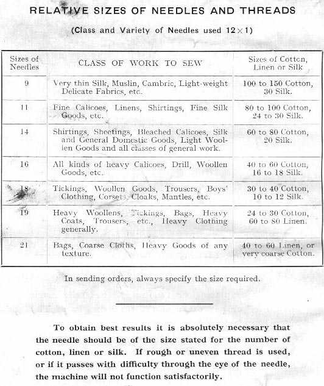

THE SLACK THREAD PIN (12) presses down the check lever (15). It is adjusted properly for all classes of general sewing, and should never be altered unless the thread breaks in sewing very thick cloth; then loosen the screw (14), and slightly lower the the slack thread pin, after which retighten the screw. Should it become displaced, it should be re-adjusted so that it begins to press down the check lever when the needle gauge mark is one-eighth of an inch above the top of the arm.
THE CHECK SPRING (16) draws up the check lever (15). Should it break or wear out, insert another as follows:- Move the needle bar (9) until its check mark is level with the top of the arm. Remove the screw that holds the spring, draw out the check lever half its length, holding it while putting in the spring with its hooked end outwards, then move the check lever back into ita place. Replace the screw, turning it a few times only, press down the end of the spring into the first hole (or into the second or third hole, if using coarse thread), then tighten the screw.
THE PRESSURE SCREW (19) regulates the pressure upon the material. Turn it to the left to increase the pressure, and to the right to decrease it. Fabrics of thick or firm texture require more pressure than thin and soft fabrics.
IF THE NEEDLE THREAD BREAKS when the needle is adjusted properly, it is caused by the tension being too tight, the eye of the needle being too small, the slack thread pin becoming displaced (see Note above), a roughness on the shuttle or its carrier, or by the point of the needle being bent.
IF THE SHUTTLE THREAD BREAKS, loosen the tension by passing the thread through fewer holes. (See page 4, "To Thread the Shuttle")
IF THERE ARE MISSED STITCHES, they are caused by the needle being adjusted too high or too low, being bent away from the shuttle, being too small for the thread, or by the point of the shuttle having become blunted.
IF THE NEEDLE THREAD FORMS SMALL LOOPS on the top of the fabric, it is caused by the check spring (16) having become broken (see Note above), and sometimes, when sewing with coarse silk or linen thread, by the needle being too fine or its point being bent.
IF THE STITCHES VARY IN LENGTH while hemming or sewing very thick and soft fabrics, loosen the feed raising cam (62), and move it a little to the left to raise the feed points, then tighten it firmly. Do not raise the feed points too high; when they descend in working they should be a little below the surface of the throat plate.
SEAMS IN HARD COTTON FABRICS should be passed over slowly, and if these are extra thick, rub them with a little white soap, which will facilitate the passage of the needle.
THE EXTRA THROAT PLATE, which has a large hole, is only required when using a No. 21 needle with 40 or 60 linen thread; never use it for any other size. See page 12 for sizes of needles and threads.
THE LEATHER BELT must be tight enogh to work the machine without slipping. If it is too loose, cut about half an inch from one end, and rejoin.
